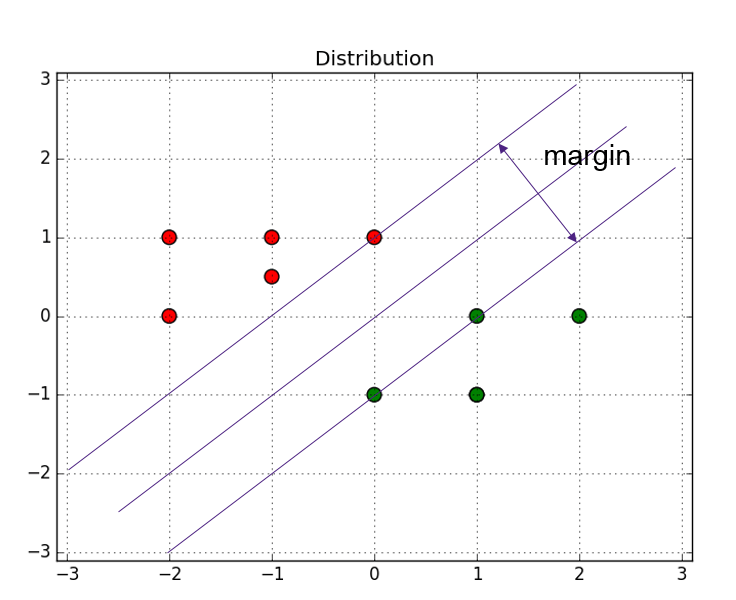

10. 支持向量机(SVM)中的支持向量是什么意思
题目
我们在下面的二元标签的数据集上训练一个线性SVM模型
+：(−1,1),(1,−1),(−1,−1)
−：(1,1),(2,0),(2,1)
这个模型中的支持向量是哪些？
A. (−1,1),(1,1),(2,1) B. (−1,1),(−1,−1),(2,1) C. (−1,1),(1,−1),(1,1),(2,0)
解析

在画分割线区分红绿两类点的时候，可以问自己一个问题，你认不认为所有的点对于分割线的位置都是起决定性作用的？
其实在特别远的区域，哪怕你增加10000个样本点，对于分割线的位置，也是没有作用的，因为分割线是由几个关键点决定的（图上三个），这几个关键点支撑起了一个分割超平面，所以这些关键点，就是支持向量。
参考文档
支持向量机（SVM）里的支持向量是什么意思 支持向量机(SVM)是什么意思？
答案
在坐标系中画一下，即可知道C是正确答案